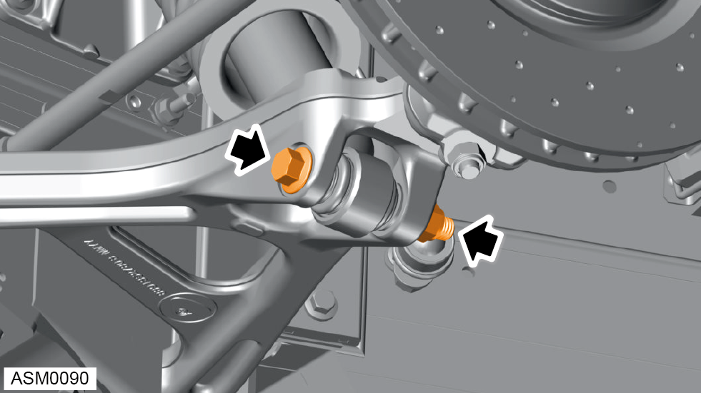
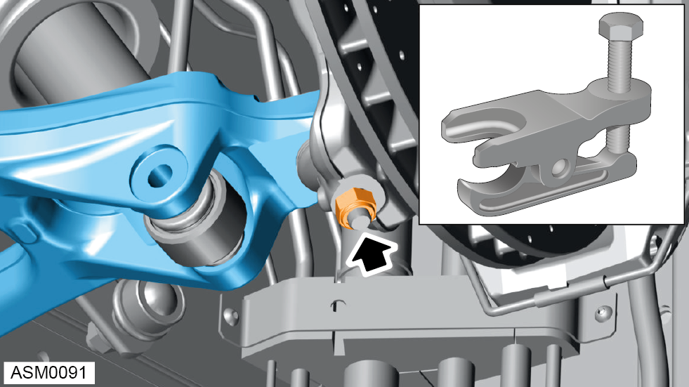
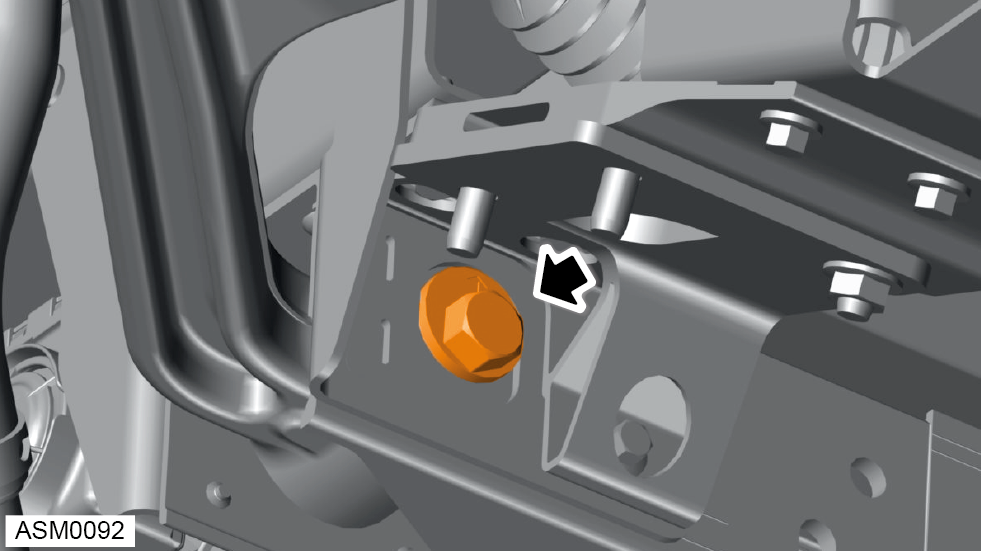
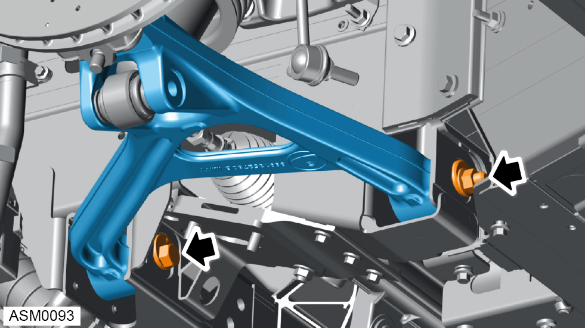

Wishbone Assembly Lower - Front - Left Side
Print
Operation Code: 31.01.18-02
Removal
- Remove wheel arch liner - front. Refer to procedure.
- Remove anti-roll bar - front. Refer to procedure.

- Remove M14x110 bolt and M14 nut securing lower damper mounting to lower wishbone. Discard nut. Torque 190 Nm.

- Loosen but do not fully remove nut securing lower wishbone ball joint to hub carrier.
NOTE: Loosen the ball joint nut until the locking threads are clear of the ball joint pin threads.
- Use ball joint splitter to separate lower wishbone ball joint from hub carrier.
- Remove and discard nut securing lower wishbone ball joint to hub carrier. Torque 86 Nm.

- Mark position of washers on lower wishbone fixings to aide installation and alignment.
NOTE: Always record quantity and fitted position of washers.

- Remove M12x95 cambolts and M12 nuts (x2) securing lower wishbone to subframe assembly. Torque 86 Nm.
- Remove lower wishbone from vehicle.
Installation
- Installation is the reverse of removal procedure except for the following:
- Only torque tighten wishbone bolts once vehicle is in the normal ride height position.
- Renew lock nut fasteners that have been removed during removal procedure.
- Perform a front steering and suspension geometry inspection and adjustment. Refer to procedure.